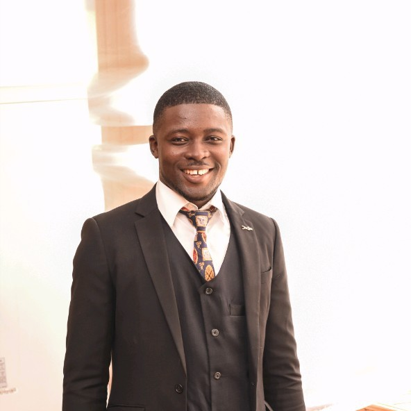

Kolawole Samuel IDOWU
Full Stack Web Developer

Summary
An astute administrator with over 10 years of professional practice. I am looking forward to leading a team of achievers in power, administrative and technology sectors.
Education
- Bachelor of Arts, English and Literature- Unversity of Lagos (2015-2019)
- O'Level, WASCE- Ajuwa Grammar School, Okeagbe, Akoko (2009- 2014)
Work Experience
-
Facilities Manager, MBO Capital, Victoria Island, Ikoyi, Lagos
Oct. 2023 - Present
- Oversees overall facility operations.
- Ensures compliance with HSE procedure.
- Tracks and monitors projects and ensures timely delivery.
-
Facility Data Collation and Analytic Officer, Facility Mgt., EKEDC, Marina, Lagos-Island, Lagos.
Nov. 2021 - Sept. 2023
- Develops process and procedures for facility operations.
- Analysis facility operation gaps and propose recommendation.
- Supervised projects and maintenance activities.
- Develop project plans and ensure compliance.
-
Front Desk Officer, Fleet Mgt., EKEDC, Marina, Lagos-Island, Lagos.
May 2021 - Nov. 2021
- Oversee the repair and maintenance of vehicles
- Enusre 100% turnaround time on vehicle repairs.
- Develop allocation procedure for vehicles and ensure efficiency
Skills
- Excellent Usage of Microsoft Packages.
- Excellent Communication.
- Front End Development: HTML, CSS, Javascript and React.
- Data Analysis and Comparative Analytics.
Awards and Certification
- Most Influential Male, Year 4, Faculty of Arts Student Association
- 2nd Runner-Up, Most Innovation Staff of the year 2022
- Personality of the Year 2019, National Association of Students of English and Literary Studies
- Responsive Web Design, freeCampCode.com.
- Data Analytics and Visualisation, Aptlearn.com
Other